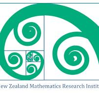

The theme of the 2027 NZMRI Summer Workshop is Combinatorics, Probability and Symmetry.
This workshop features leading researchers giving lecture series on selected topics. The broad theme of the meeting is the interplay of combinatorics, probability, and symmetry. Topics covered include problems of geometric flavor with roots in analysis, probability and combinatorics, probabilistic and additive combinatorics, enumerative combinatorics, and more.
The workshop will be held at the Function Centre at Tahunanui Beach, Nelson.
It will feature six outstanding researchers, each giving a series of 3 lectures.
Arrival: by the evening of Saturday, 9 January
Departure: lunchtime Saturday, 16 January.
Talks will start at 9am Sunday 10 January, and finish by lunchtime Saturday 16 January.
Lectures will run each morning. Wednesday is a free day.
These will be made available later.
Accommodation is reserved for NZ students at the nearby Tahuna Beach Holiday Park
All other participants must arrange their own accommodation bookings. Here are some nearby motels:
Dinner will be provided at the Function Centre for participants and their families on Sunday and Friday. Lunch will be provided on Monday, Tuesday, and Thursday. Wednesday is a free day.
We will cover the cost of accommodation and catering for all NZ-based student participants.
Students at NZ universities are encouraged to apply for a Kalman Summer Scholarship to assist their participation at this workshop. The Kalman Summer Scholarships were established from a generous bequest in support of New Zealand mathematics from the late John Kalman, a former professor at the University of Auckland.
Four or five scholarships will be awarded to help cover costs of travel and incidental expenses (on top of accommodation and catered meals).
Applicants must:
Applications should be sent by email to the NZMRI Secretary, Prof. Rod Gover (r.gover@auckland.ac.nz), by 15th November 2026.
Scholarship recipients will be expected to submit a short report by mid-February 2027 describing what they gained from the workshop.
We will provide some support for NZ-based academics to attend. Cost of catering is covered for participants and families. We will make a contribution of at most $500 to accommodation costs. You must provide a GST receipt for your accommodation charges.
You are most welcome to attend. However, the NZMRI’s funding for the workshop does not permit support for participants based outside of New Zealand. If you need information on costs of catering or other details, please email Eamonn.
This will be available from mid August 2026.
Nelson Airport is located 2 kilometres from the workshop venue. There are flights between Nelson and Auckland, Wellington and Christchurch. By car, Nelson is a pleasant 2-hour drive (110km) from Picton, where there are car and passenger ferries connecting with Wellington.
The organisers are Rajko Nenadov (rajko.nenadov@canterbury.ac.nz) and Eamonn O’Brien (e.obrien@auckland.ac.nz)
This page will be updated regularly. To obtain further information, email Rajko.
Last updated May 2026